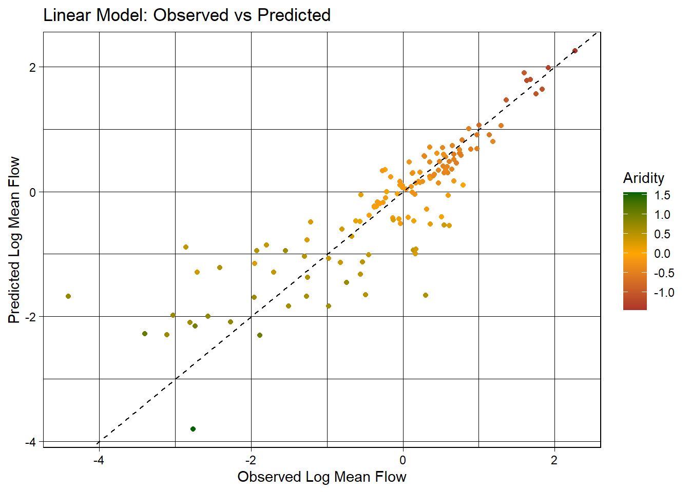
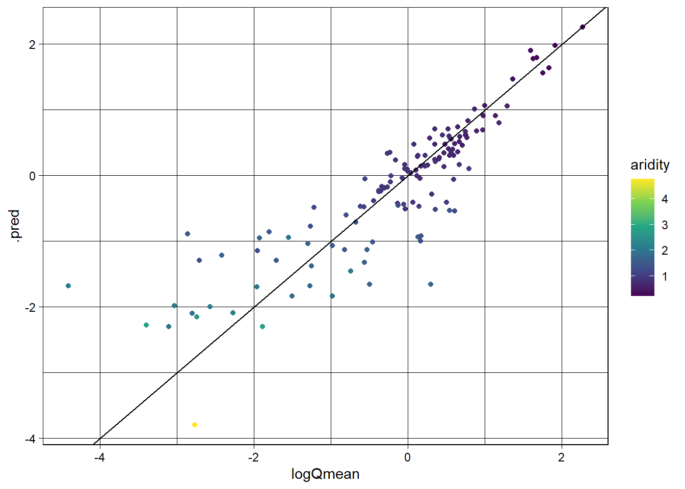
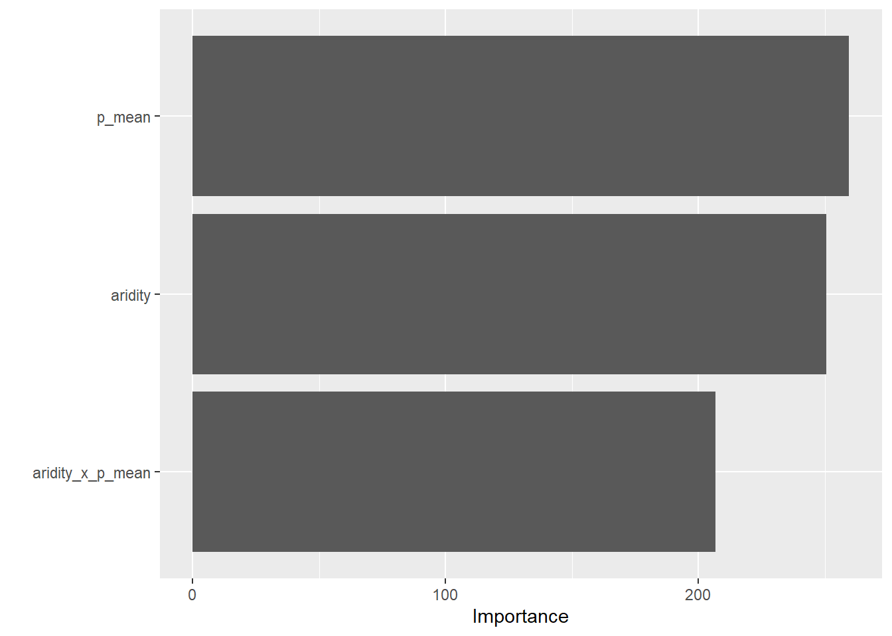
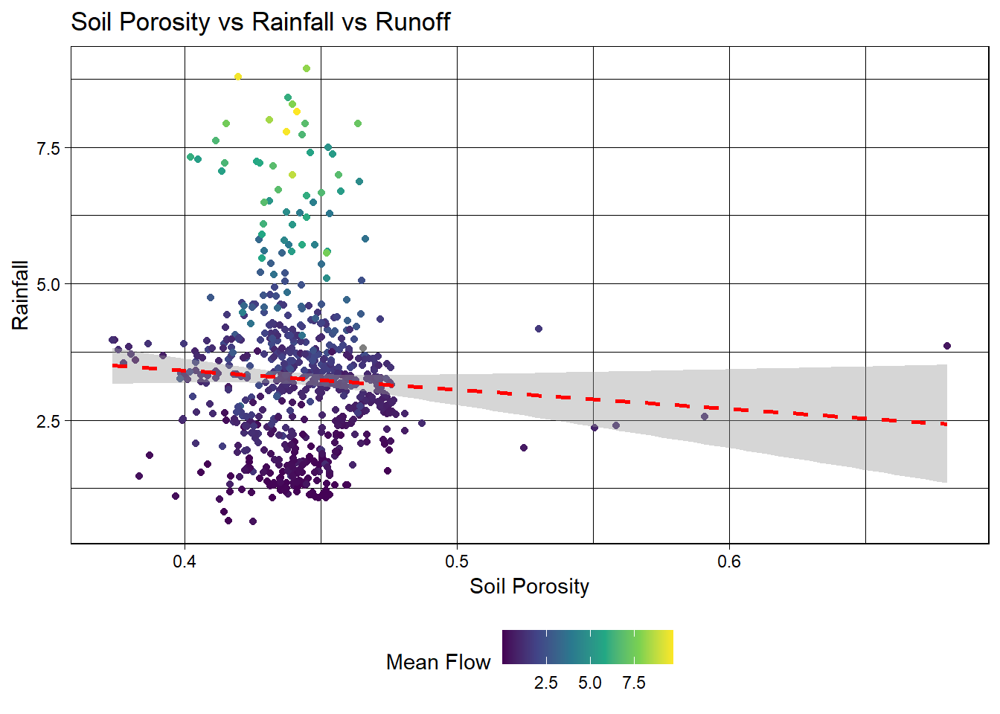
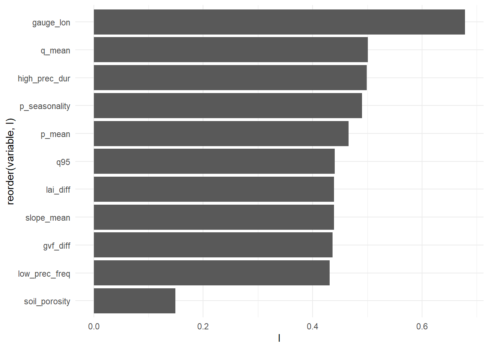
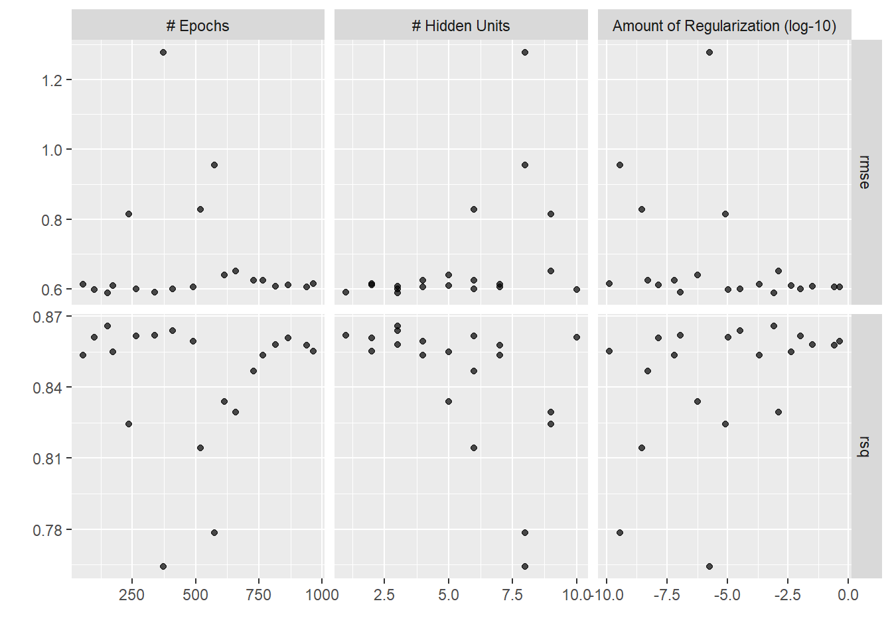
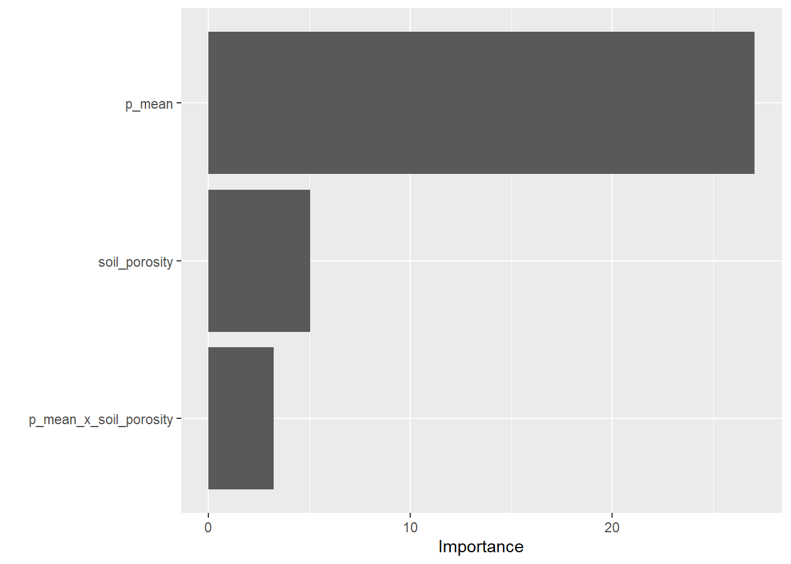
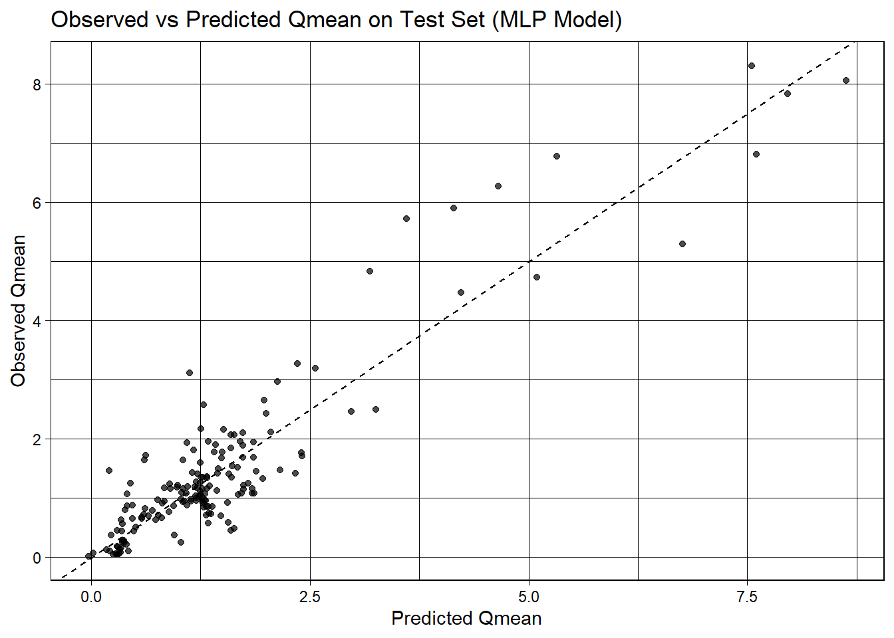

types <-c("clim", "geol", "soil", "topo", "vege", "hydro")# Where the files live online ...remote_files <-glue('{root}/camels_{types}.txt?download=1')# where we want to download the data ...local_files <-glue('data/camels_{types}.txt')walk2(remote_files, local_files, download.file, quiet =TRUE)# Read and merge datacamels <-map(local_files, read_delim, show_col_types =FALSE) camels <-power_full_join(camels ,by ='gauge_id')
Question 1
zero_q_freq is a hydrological signature that represents the frequency of days with Q=0 mm/day shown as a percentage.
#Exploratory Data Analysisggplot(data = camels, aes(x = gauge_lon, y = gauge_lat)) +borders("state", colour ="gray50") +geom_point(aes(color = q_mean)) +scale_color_gradient(low ="pink", high ="dodgerblue") + ggthemes::theme_map()
Warning: `borders()` was deprecated in ggplot2 4.0.0.
ℹ Please use `annotation_borders()` instead.
#Set up dataset.seed(184)# Bad form to perform simple transformations on the outcome variable within a # recipe. So, we'll do it here.camels <- camels |>mutate(logQmean =log(q_mean))# Generate the splitcamels_split <-initial_split(camels, prop =0.8)camels_train <-training(camels_split)camels_test <-testing(camels_split)camels_cv <-vfold_cv(camels_train, v =10)# Create a recipe to preprocess the datarec <-recipe(logQmean ~ aridity + p_mean, data = camels_train) %>%# Log transform the predictor variables (aridity and p_mean)step_log(all_predictors()) %>%# Add an interaction term between aridity and p_meanstep_interact(terms =~ aridity:p_mean) |># Drop any rows with missing values in the predstep_naomit(all_predictors(), all_outcomes())
#Linear Model# Prepare the databaked_data <-prep(rec, camels_train) |>bake(new_data =NULL)# Interaction with lm# Base lm sets interaction terms with the * symbollm_base <-lm(logQmean ~ aridity * p_mean, data = baked_data)summary(lm_base)
Call:
lm(formula = logQmean ~ aridity * p_mean, data = baked_data)
Residuals:
Min 1Q Median 3Q Max
-2.92746 -0.24133 -0.01215 0.21980 2.79954
Coefficients:
Estimate Std. Error t value Pr(>|t|)
(Intercept) -1.9170 0.1630 -11.759 < 2e-16 ***
aridity -0.7256 0.1600 -4.534 7.17e-06 ***
p_mean 1.6328 0.1541 10.593 < 2e-16 ***
aridity:p_mean 0.1014 0.0729 1.391 0.165
---
Signif. codes: 0 '***' 0.001 '**' 0.01 '*' 0.05 '.' 0.1 ' ' 1
Residual standard error: 0.5691 on 532 degrees of freedom
Multiple R-squared: 0.7646, Adjusted R-squared: 0.7633
F-statistic: 576 on 3 and 532 DF, p-value: < 2.2e-16
# Sanity Interaction term from recipe ... these should be equal!!summary(lm(logQmean ~ aridity + p_mean + aridity_x_p_mean, data = baked_data))
Call:
lm(formula = logQmean ~ aridity + p_mean + aridity_x_p_mean,
data = baked_data)
Residuals:
Min 1Q Median 3Q Max
-2.92746 -0.24133 -0.01215 0.21980 2.79954
Coefficients:
Estimate Std. Error t value Pr(>|t|)
(Intercept) -1.9170 0.1630 -11.759 < 2e-16 ***
aridity -0.7256 0.1600 -4.534 7.17e-06 ***
p_mean 1.6328 0.1541 10.593 < 2e-16 ***
aridity_x_p_mean 0.1014 0.0729 1.391 0.165
---
Signif. codes: 0 '***' 0.001 '**' 0.01 '*' 0.05 '.' 0.1 ' ' 1
Residual standard error: 0.5691 on 532 degrees of freedom
Multiple R-squared: 0.7646, Adjusted R-squared: 0.7633
F-statistic: 576 on 3 and 532 DF, p-value: < 2.2e-16
#Validate and Evaluatetest_data <-bake(prep(rec), new_data = camels_test)test_data$lm_pred <-predict(lm_base, newdata = test_data)#Common regression metrics such as RMSE, R-squared, and MAE between the observed and predicted valuesmetrics(test_data, truth = logQmean, estimate = lm_pred)
# A tibble: 3 × 3
.metric .estimator .estimate
<chr> <chr> <dbl>
1 rmse standard 0.587
2 rsq standard 0.759
3 mae standard 0.397
ggplot(test_data, aes(x = logQmean, y = lm_pred, colour = aridity)) +# Apply a gradient color scalescale_color_gradient2(low ="brown", mid ="orange", high ="darkgreen") +geom_point() +geom_abline(linetype =2) +theme_linedraw() +labs(title ="Linear Model: Observed vs Predicted",x ="Observed Log Mean Flow",y ="Predicted Log Mean Flow",color ="Aridity")
Warning: Removed 1 row containing missing values or values outside the scale range
(`geom_point()`).

#Using Workflow# Define modellm_model <-linear_reg() %>%# define the engineset_engine("lm") %>%# define the modeset_mode("regression")# Instantiate a workflow ...lm_wf <-workflow() %>%# Add the recipeadd_recipe(rec) %>%# Add the modeladd_model(lm_model) %>%# Fit the model to the training datafit(data = camels_train) # Extract the model coefficients from the workflowsummary(extract_fit_engine(lm_wf))$coefficients
#Predictions and Evallm_data <-augment(lm_wf, new_data = camels_test)dim(lm_data)
[1] 135 61
metrics(lm_data, truth = logQmean, estimate = .pred)
# A tibble: 3 × 3
.metric .estimator .estimate
<chr> <chr> <dbl>
1 rmse standard 0.587
2 rsq standard 0.759
3 mae standard 0.397
#scatter plot of the observed vs predicted values, colored by aridity, to visualize the model performanceggplot(lm_data, aes(x = logQmean, y = .pred, colour = aridity)) +scale_color_viridis_c() +geom_point() +geom_abline() +theme_linedraw()
Warning: Removed 1 row containing missing values or values outside the scale range
(`geom_point()`).

library(baguette)rf_model <-rand_forest() %>%set_engine("ranger", importance ="impurity") %>%set_mode("regression")rf_wf <-workflow() %>%# Add the recipeadd_recipe(rec) %>%# Add the modeladd_model(rf_model) %>%# Fit the modelfit(data = camels_train) rf_data <-augment(rf_wf, new_data = camels_test)dim(rf_data)
[1] 135 60
#Workflow set w/ 2 models and comparisonwf <-workflow_set(list(rec), list(lm_model, rf_model)) %>%workflow_map('fit_resamples', resamples = camels_cv) autoplot(wf)
#rf wins -> final modelfinal <-workflow() |>add_recipe(rec) |>add_model(rf_model) |>fit(data = camels_train)#Eval# Variable importance (which predictors is the model actually using)final |>extract_fit_parsnip() |> vip::vip()

# Predictions on the test set (Test-set metrics — apply the trained model to data it has never seen)rf_data <-augment(final, new_data = camels_test)# Regression metrics (rmse, rsq, mae by default)metrics(rf_data, truth = logQmean, estimate = .pred)
# A tibble: 3 × 3
.metric .estimator .estimate
<chr> <chr> <dbl>
1 rmse standard 0.655
2 rsq standard 0.705
3 mae standard 0.414
#Visual check (the 1:1 line should run through the cloud)ggplot(rf_data, aes(x = logQmean, y = .pred, colour = aridity)) +scale_color_viridis_c() +geom_point() +# 1:1 line — perfect predictiongeom_abline(linetype =2) +# Actual regression line for contrastgeom_smooth(method ="lm", col ='red', linetype =2, se =FALSE) +theme_linedraw() +labs(title ="Random Forest Model: Observed vs Predicted",x ="Observed Log Mean Flow",y ="Predicted Log Mean Flow",color ="Aridity")
`geom_smooth()` using formula = 'y ~ x'
Warning: Removed 1 row containing non-finite outside the scale range
(`stat_smooth()`).
Warning: Removed 1 row containing missing values or values outside the scale range
(`geom_point()`).
Warning: There was 1 warning in `dplyr::mutate()`.
ℹ In argument: `model = iter(...)`.
Caused by warning:
! package 'future' was built under R version 4.4.3
Registered S3 method overwritten by 'butcher':
method from
as.character.dev_topic generics
Answer: I would use the random forest model. This has the lowest RMSE (which measures how far off your predictions are from the true values) indicating the predicted value are closer to that actual values compared to the other models. It also has the highest RSQ (which is how much of the variation in the data your model explains) meaning this model does the best at explaining the variations compared to the other models.
Question 4- Data Prep and EDA
#Set up and skimset.seed(198)library(skimr)
Warning: package 'skimr' was built under R version 4.4.3
skimr::skim(camels, q_mean)
Data summary
Name
camels
Number of rows
671
Number of columns
59
_______________________
Column type frequency:
numeric
1
________________________
Group variables
None
Variable type: numeric
skim_variable
n_missing
complete_rate
mean
sd
p0
p25
p50
p75
p100
hist
q_mean
1
1
1.49
1.54
0
0.63
1.13
1.75
9.69
▇▁▁▁▁
This tells me that q_mean has one missing value and is essentially 99% complete. Additionally, I know this variable is mean discharge which continuous. Finally, the sd and histogram show a heavily right skewed distribution.
Chosen Variables:
p_mean: because it represents the primary water input to a catchment, directly controlling how much water is available to become streamflow.
soil_porosity: because it determines how much precipitation the soil can store versus route to runoff, strongly influencing how rainfall is converted into streamflow.
skimr::skim(camels, soil_porosity) #low sd, heavily right skewed
Data summary
Name
camels
Number of rows
671
Number of columns
59
_______________________
Column type frequency:
numeric
1
________________________
Group variables
None
Variable type: numeric
skim_variable
n_missing
complete_rate
mean
sd
p0
p25
p50
p75
p100
hist
soil_porosity
0
1
0.44
0.02
0.37
0.43
0.44
0.46
0.68
▃▇▁▁▁
skimr::skim(camels, p_mean) #high sd, heavily right skewed
Data summary
Name
camels
Number of rows
671
Number of columns
59
_______________________
Column type frequency:
numeric
1
________________________
Group variables
None
Variable type: numeric
skim_variable
n_missing
complete_rate
mean
sd
p0
p25
p50
p75
p100
hist
p_mean
0
1
3.26
1.41
0.64
2.37
3.23
3.78
8.94
▃▇▂▁▁
#Visualize distributionggplot(camels, aes(x = soil_porosity, y = p_mean)) +geom_point(aes(color = q_mean)) +geom_smooth(method ="lm", color ="red", linetype =2) +scale_color_viridis_c() +theme_linedraw() +theme(legend.position ="bottom") +labs(title ="Soil Porosity vs Rainfall vs Runoff",x ="Soil Porosity",y ="Rainfall",color ="Mean Flow")
`geom_smooth()` using formula = 'y ~ x'

Soil porosity: bounded (roughly 0.38–0.67) and heavily concentrated in a narrow band (~0.40–0.46). Likely low variance and right skew based on skim results. Use step_normalize(all_predictors()) since porosity is bounded and on a different scale
p_mean (rainfall): right-skewed (long tail) and possibly weakly bimodal (dense low cluster ~2–4 with less in a higher cluster ~5–8). Use step_log(p_mean)
Relationship: porosity vs rainfall shows very weak (slightly negative) linear trend
#Morans Ilibrary(ape)
Warning: package 'ape' was built under R version 4.4.3
Attaching package: 'ape'
The following object is masked from 'package:ggpubr':
rotate
The following object is masked from 'package:rsample':
complement
The following object is masked from 'package:dials':
degree
The following object is masked from 'package:dplyr':
where
set.seed(10)samp <-slice_sample(camels, n =400)dmat <-as.matrix(dist(cbind(samp$gauge_lon, samp$gauge_lat)))W <-1/ dmat; diag(W) <-0W <- W /rowSums(W)preds_I <- samp |>select(where(is.numeric), -gauge_id) |>map_dfr(~tibble(I =Moran.I(.x, W, na.rm =TRUE)$observed),.id ="variable" ) |>arrange(desc(I))#Show top 10 predictors and soil porosity at the bottompreds_I |>slice_max(I, n =10) |>bind_rows( preds_I |>filter(variable =="soil_porosity") ) |>distinct(variable, .keep_all =TRUE) |>ggplot(aes(x =reorder(variable, I), y = I)) +geom_col() +coord_flip() +theme_minimal()

#Split and stratificationcamels_split2 <-initial_split(camels, prop =0.75)camels_train2 <-training(camels_split2)camels_test2 <-testing(camels_split2)camels_cv2 <-vfold_cv(camels_train2, v =10)
Why not to stratify: This lab plans to use multiple flexible models that may be able to learn nonlinear or interaction effects across all oof the basins without splitting the data. So, stratification is unnecessary and can potentially reduce sample size too much.
Question 4- Recipe
rec2 <-recipe(q_mean ~ p_mean + soil_porosity, data = camels_train2) %>%# Log-transform precip b/c right skew and stabilize variancestep_log(p_mean) %>%# Normalize all predictors because soil porosity is bounded and on a different scale than rainfallstep_normalize(all_predictors()) %>%# Add interaction between rainfall and soil structure to capture differing runoff efficiencystep_interact(terms =~ p_mean:soil_porosity) %>%# Remove any rows with missing values to ensure model compatibilitystep_naomit(all_predictors(), all_outcomes())
This recipe uses p_mean and soil porosity as predictors because precipitation controls water input to the system while soil porosity influences how much of that water is stored instead of converted to runoff, making them possibly physically meaningful drivers of q_mean. The response variable is log-transformed (log(q_mean)) because q_mean is right-skewed with many low flows and a few high extremes (see graph above). p_mean is log-transformed as well because it is also right-skewed with a long tail and a weak bimodal structure (see graph). All predictors are normalized because soil porosity is bounded and concentrated in a narrow range, while rainfall varies more widely, so scaling prevents rainfall from overwhelming the model. An interaction between p_mean and soil porosity is included because the effect of rainfall on streamflow likely connects to soil structure, meaning that runoff efficiency changes across different infiltration capacities.
Decision tree- This can be used as a good baseline as it is good at modeling non linear relationships, although it may overfit.
MLP (neural network)- This model can learn about the highly non-linear interactions between rainfall and soil porosity that may not be well captured by simpler tree splits.
Question 4- Workflow Set
library(spatialsample)
Warning: package 'spatialsample' was built under R version 4.4.3
wf_set <-workflow_set(preproc =list(camels_recipe = rec2),models =list( rf_model2, mlp_model, tree_model))set.seed(1222)# 10-fold random CVcv_random <-vfold_cv(camels_train2, v =10)wf_results_random <- wf_set %>%workflow_map("fit_resamples",resamples = cv_random)library(sf)
Warning: package 'sf' was built under R version 4.4.3
Linking to GEOS 3.13.0, GDAL 3.10.1, PROJ 9.5.1; sf_use_s2() is TRUE
camels_sf <- camels_train2 |>st_as_sf(coords =c("gauge_lon", "gauge_lat"),crs =4326, remove =FALSE)#clusters basins first, then uses clusters as foldscv_spatial <-spatial_clustering_cv(camels_sf, v =10)wf_results_spatial <- wf_set %>%workflow_map("fit_resamples",resamples = cv_spatial)
→ A | warning: A correlation computation is required, but `estimate` is constant and has 0
standard deviation, resulting in a divide by 0 error. `NA` will be returned.
There were issues with some computations A: x1
There were issues with some computations A: x1
Describe the gap (5–7 sentences): which model wins, how much does performance drop when you move from random to spatial CV, and which number do you trust as your generalization estimate? What does the spread of per-fold metrics tell you about where your model struggles? Recall from lecture that a small gap is a signal that your predictors carry real transferable signal — not a failed diagnostic.
Answer: MLP (neural network) is the best model in both cases. There is a large drop in both varibales from random to spatial, especially in MLP RMSE. This happens because random CV lets the model “see” nearby or similar basins which can lead to spatial autocorrelation. In contrast, spatial CV removes this by testing on entirely new regions, making prediction harder but more realistic. For this reason, I would trust the spatial CV results more. The std_err measures how much performance changes across folds showing the stability of the model under different splits. In this case, random CV has low sdr while spatial CV shows much higher variability across folds, meaning the model struggles with geographic distributions.
Question 4- Tune Best Model
mlp_model <-mlp(hidden_units =tune(),penalty =tune(),epochs =tune()) |>set_engine("nnet") |>set_mode("regression")mlp_params <-workflow() %>%add_model(mlp_model) %>%extract_parameter_set_dials()mlp_grid <- mlp_params %>%grid_latin_hypercube(size =20)#number of combinations to try
Warning: `grid_latin_hypercube()` was deprecated in dials 1.3.0.
ℹ Please use `grid_space_filling()` instead.
#Why latin hypercube- This looks a whole range of possiblities and best captures the maximum varibaility with minimum locations.mlp_tuned_spatial <-workflow() %>%add_recipe(rec2) %>%add_model(mlp_model) %>%tune_grid(resamples = camels_cv2, #spatial foldsgrid = mlp_grid, #latin hypercubecontrol =control_grid(save_pred =TRUE))#keep predictions for analysisautoplot(mlp_tuned_spatial)

show_best(mlp_tuned_spatial, metric ="rmse")
# A tibble: 5 × 9
hidden_units penalty epochs .metric .estimator mean n std_err .config
<int> <dbl> <int> <chr> <chr> <dbl> <int> <dbl> <chr>
1 3 0.000810 152 rmse standard 0.590 10 0.0313 pre0_m…
2 1 0.000000113 339 rmse standard 0.590 10 0.0311 pre0_m…
3 10 0.0000106 101 rmse standard 0.598 10 0.0381 pre0_m…
4 3 0.0000322 409 rmse standard 0.600 10 0.0277 pre0_m…
5 6 0.0103 264 rmse standard 0.601 10 0.0397 pre0_m…
Analysis- Hidden units is the parameter that matters the most with some structure (curve) in the rmse graph and a tight range in the table, followed by penalty (regularization), then epochs. This means the model is most sensitive to the hidden units (number of neurons), meaning it may underfit or overfit depending on the number.
Question 4- Variable Importance
b_wflow <-workflow() %>%add_recipe(rec2) %>%add_model(mlp_model)best_params <-select_best(mlp_tuned_spatial, metric ="rmse")#Finalize model with best parametersfinal_mlp_model <-finalize_model(mlp_model, best_params)final_wf <-finalize_workflow(b_wflow, best_params)fitted_wf <- final_wf %>%fit(data = camels_train2)fitted_wf %>%extract_fit_parsnip() %>%vip()

Interpret the top predictors (4–6 sentences). Cross-reference against the predictor Moran’s I you computed in EDA — are any of the top VIP features also highly spatially autocorrelated? If so, they could be acting as geographic proxies — discuss whether the importance reflects mechanism or location.
Answer- The VIP results show that p_mean has the largest magnitude of influence, meaning the model relies more heavily on rainfall to make predictions than on soil porosity or their interaction. Compared to the Moran’s I results, p_mean is in the top 5 spatially autocorrelated predictors, meaning it has a stronger geographic structure across basins which makes sense as it is rainfall. In contrast, soil_porosity shows low spatial autocorrelation, suggesting it varies more locally and is less tied to broad spatial patterns. This implies that the importance of p_mean may partly reflect location-based structure rather than purely local hydrologic mechanisms.
pred_df <-collect_predictions(final_fit)ggplot(pred_df, aes(x = .pred, y = q_mean)) +geom_point(alpha =0.7) +geom_abline(slope =1, intercept =0, linetype ="dashed") +theme_linedraw() +labs(title ="Observed vs Predicted Qmean on Test Set (MLP Model)",x ="Predicted Qmean",y ="Observed Qmean")

Describe what you think of the results — including how the test-set metrics compare to your spatial-CV estimate, where the model under- or over-predicts, and what you’d investigate next.
Answer: The test-set predictions show a strong overall relationship with observations, indicating the model captures the general hydrologic pattern. Compared to spatial CV, the test-set performance is expected to look slightly better, but the spatial CV is more trustworthy because it prevents geographic errors. The model performed best in the low-to-mid discharge range, where points cluster around the 1:1 line but the model shows larger errors at high observed Qmean values. This may mean the model is underpredicting at high flows and/or slightly overpredicting in some low-flow cases. For next steps, I would experiment with other probable hydrologic drivers such as temperature, PET, or snow.